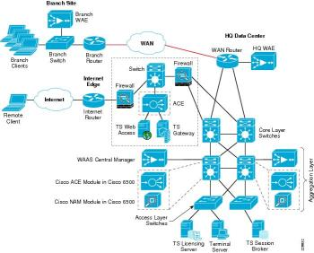

Config management
for the cloud
Felix Frank
OpenStack DACH Day 2016, Berlin
Presenting

This cat on stage: Felix Frank (
 @felis_rex
@felis_rex
 ffrank
)
ffrank
)
Always
9 to 5
https://upload.wikimedia.org/wikipedia/commons/thumb/a/af/Tux.png/122px-Tux.png
https://avatars3.githubusercontent.com/u/234268
https://cdn4.iconfinder.com/data/icons/iconsimple-logotypes/512/github-512.png
Great to be here
It was a long way

2004
https://upload.wikimedia.org/wikipedia/commons/thumb/d/d8/NASA_Mars_Rover.jpg/390px-NASA_Mars_Rover.jpg

http://www.desy.de/forschung/anlagen__projekte/hera/index_ger.html

http://www.desy.de/forschung/anlagen__projekte/tier_2/index_ger.html
https://www.nagios.org/

http://www.rccomputers.com/2013/08/06/we-help-you-get-rid-of-that-old-computer-junk/


https://en.wikipedia.org/wiki/Perl
https://twitter.com/cfengine

2009
http://thesource.com/2016/06/25/seven-years-too-long-remembering-michael-jackson/


https://community.spiceworks.com/topic/517887-how-do-you-stack-your-rack

https://www.digitalocean.com/community/tutorials/5-common-server-setups-for-your-web-application

https://www.ruby-lang.org/en/about/logo/
https://github.com/logos
Infrastructure as code
→ http://www.clipartkid.com/stock-photos-programming-source-code-a26erW-clipart/
http://www.cisco.com/c/en/us/td/docs/solutions/Enterprise/Data_Center/App_Networking/MS-windows-TS-DC.html
EPISODE IV
A New Hobby
And now here we are

http://imgur.com/Uvd6b4C

2016
http://www.esquire.com/news-politics/news/a37221/donald-trump-batman/
- Distinct resources which
- Check their respective state
- Sync if necessary
Conceptually similar to Puppet
- resource model
- acyclic graph
- import/export of resource data
Unique key features
- parallel execution
- event system
- distributed exchange
Explained in James's blog
Parallel execution
 vs.
vs.

Distributed exchange

Event system
...Let's see a demo!
Looking at the topology once more...
There is support for Puppet manifests!
built by your's truly
Automatic edges
- e.g. find systemd units in package file listings
- find config file locations in packages
- ...
Automatic grouping
E.g. handle independent package resources in one go vs.
vs.

Automatic clustering
etcd is bundled right into mgmt
mgmt creates ad hoc etcd clusters for you
Agent-less mode
a.k.a. that Ansible thingThe language
More resources
APIs (?)
Early vetting
Write in Go
Interface with systemd et al
Summarizing
Summarizing
- mgmt runs with the core strengths of Puppet-like tools
- its focus on the big Linux distros allows tight integration
- events and a distributed message bus allow fast cluster convergence
- provides new management approaches
- currently pre-alpha, any contributions welcome